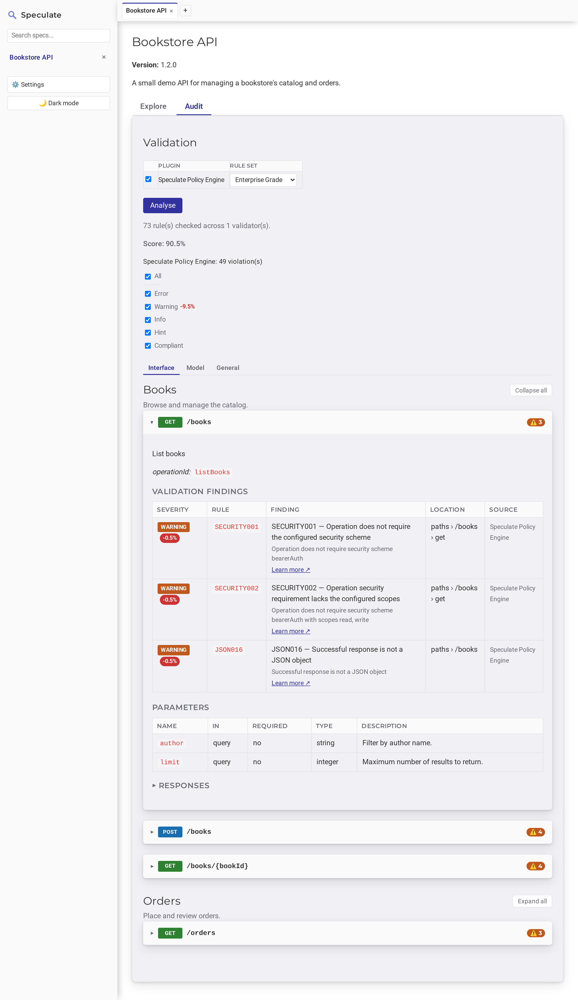

Validation¶
Validation in Speculate is on-demand and pluggable. Opening a spec doesn't run anything by itself — you choose what runs and when.
Speculate ships one bundled plugin, the
Speculate Policy Engine (generic-policy), and
discovers any additional plugin jars you drop in. Multiple plugins can run
together — for example a general API-guidelines linter alongside a specialised,
organization-specific plugin such as a breaking-changes checker.

Running validation¶
A Validation picker on the spec's page lists every globally enabled plugin as its own row — a checkbox plus that plugin's own rule-set dropdown — so more than one plugin can run at once. Click Analyse to run every checked plugin; nothing runs until you do.
Which plugins are checked is remembered per spec in the database, so re-opening a spec later starts from the same selection. (A plugin's global enabled/disabled state in Settings still governs whether it appears in the picker at all.)
Reading findings¶
Findings from every plugin that ran are merged into one view. Each endpoint whose findings map to a specific operation shows a combined severity-count badge (❌ error, ⚠️ warning, ℹ️ info, 💡 hint) in its header; expanding the endpoint lists those findings in full:
- severity, rule ID, and the finding text
- the JSON Pointer location
- which plugin reported it
- a Learn more link to the plugin's own rule documentation when it provides one
Scores¶
A plugin may optionally report an overall compliance score (0–100) and, per violation, how many points fixing it would recover. Speculate shows these as percentages when present — but only ever from a single plugin's scoring model. With more than one scoring plugin checked, the score is hidden rather than combining two unrelated models into a meaningless number.
Severity levels¶
Findings are tagged with one of four fixed Severity levels — ERROR,
WARNING, INFO, HINT. The label shown for each (on the severity filter
and in the findings table) comes from the plugin's getSeverityLabel(Severity),
so a plugin can surface its own vocabulary (e.g. Must / Should / May /
Hint). The default simply title-cases the enum name.
Rule sets¶
A plugin can declare more than one named rule set — e.g. an
internal / external split for an organization that lints differently by API
audience. Every enabled plugin gets its own row in the picker with its own
rule-set dropdown; a plugin with only the implicit default set just has one
entry.
A rule set is a plugin-chosen name, not an engine-specific concept. The Speculate Policy Engine exposes one rule set per bundled policy: Enterprise Grade (the default), Zalando, and Zalando Extended.
getRuleSets() returns a List, not a Set
The picker submits a rule set's position in the returned list, and the
UI shows them in that order (preferred default first). A Set.of(...) with
two or more elements has no iteration-order guarantee in Java, so rule sets
would reshuffle on every restart. Keep the order stable across releases.
Where plugins come from¶
Plugin .jar files are discovered from two folders at startup:
plugins/, next tospeculate.jar— where the release zip ships the bundled Speculate Policy Engine. Not created automatically if missing.~/.speculate/plugins— a stable location independent of where Speculate is installed, created automatically if it doesn't exist. Drop your own plugin jars here.
Enable or disable individual plugins globally from Settings. A disabled plugin stays loaded but never appears in a spec's picker and is skipped during validation, so re-enabling it doesn't need a restart. The per-spec checkbox is a narrower, additional switch layered on top of the global setting.
Next¶
- Speculate Policy Engine — how the bundled plugin's detectors, rules, and policies work, and how to extend the bundle.
- Rule Catalogue — every rule in the bundle and which policies use it.
- Policies — the bundled Enterprise Grade, Zalando, and Zalando Extended rule sets.
- Writing a Plugin — implement the
SpecValidationPluginSPI.